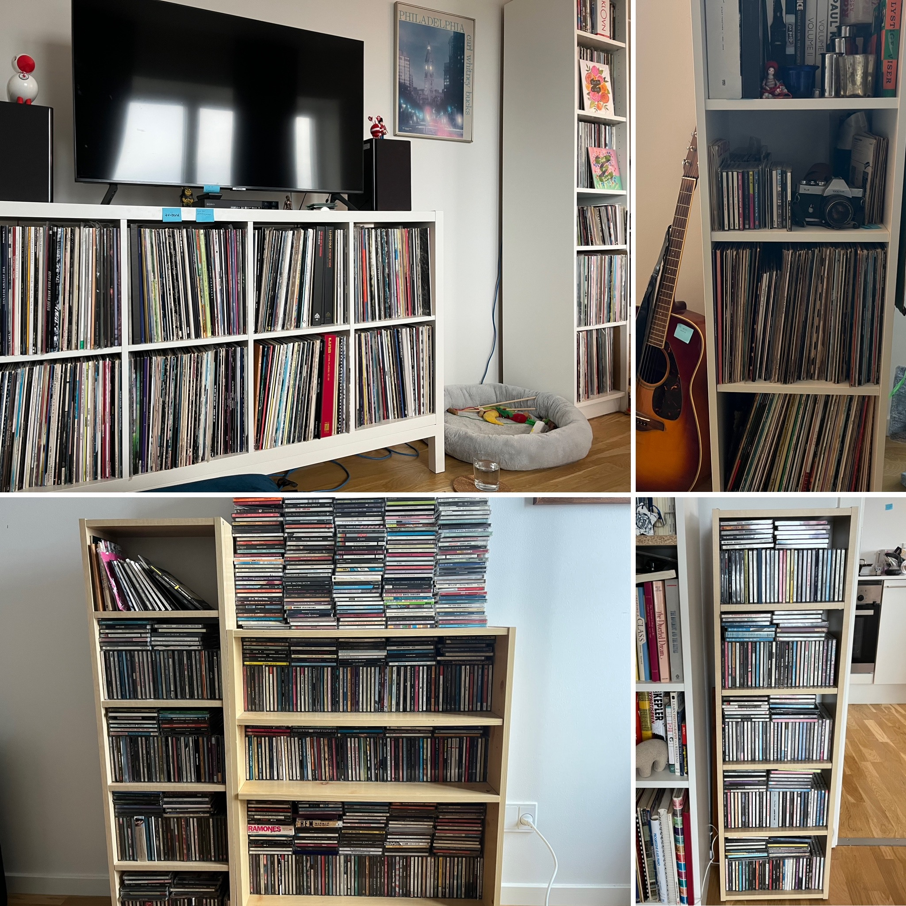
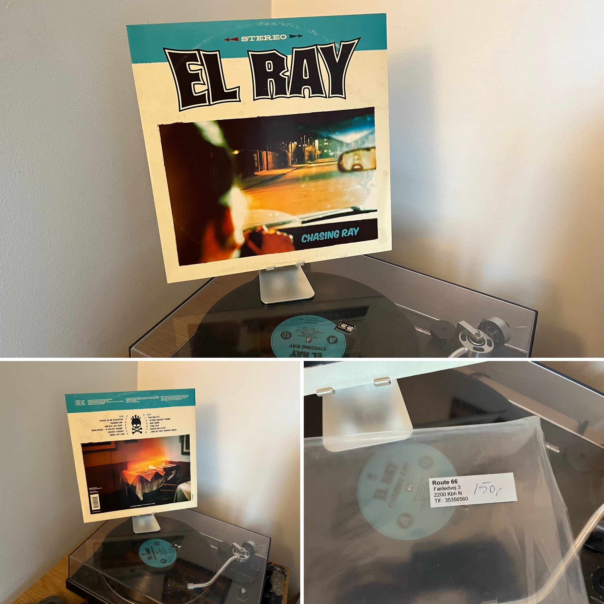

# load packages
library(tidyverse) # to do tidyverse things
library(tidylog) # to get a log of what's happening to the data
library(janitor) # tools for data cleaningYes, I have a lot of music.

To know exactly how much, a few years ago I painstakingly catalogued everything into a spreadsheet, and every time I get something new I add to the list. As of October 2023 I have over 2160 records and CDs…more than 900 vinyl albums (LP & EP), more than 1000 CD albums (LP & EP), 100+ 7” singles plus music in other formats.
And yes I had it shipped from San Francisco to Lyon, then Lyon to Copenhagen. Related, my wife is a patient and understanding woman.
We know about the paradox of choice, right? Why you can’t choose something to watch from the thousands of things available on the streaming services to which you subscribe?
Yeah, same here.
This is a problem I want to solve even more now that I’ll be home more often, as my contract at CIEE has ended and I’m spending time re-skilling and upskilling my data knowledge…getting reacquainted with r, learning some Python and Tableau, and hopefully posting more regularly here, all while looking for my next job (hint-hint, if you need a data analyst/data scientist or know someone who does, let me know).
I need things to listen to and sometimes I want to randomize the choice so I don’t spend 10 minutes dithering about it and choosing one of the same 20 records I listen to by default.
So anyway, what does a data nerd do? Write a quick script to randomize the choice. It’s fairly simple, and I have a couple of ground rules:
What comes up must be played. If that means Hüsker Dü Land Speed Record at 8:30am, so be it. If that means Wilco’s Sky Blue Sky in the afternoon when I need a pick-me-up, so be it.
Once played, it can’t be played again via the randomizer. This of course doesn’t preclude playing it when I want to hear it.
So how does it work? Well, let’s see the code…it’s not genius-level but it does the trick.
First we load the packages….
Now we load the music library…
# read in music library
musiclib <- readxl::read_excel("~/Documents/music catalogue.xlsx") %>%
clean_names() %>%
rename(format = format_vinyl_cd, type = type_lp_ep_7_single_12)
#> rename: renamed 2 variables (type, format)
glimpse(musiclib)
#> Rows: 2,166
#> Columns: 11
#> $ artist <chr> "'Til Tuesday", "[The] Caseworker", "10,000 Maniacs", "1…
#> $ title <chr> "Welcome Home", "These Weeks Should Be Remembered", "Bli…
#> $ type <chr> "LP", "LP", "LP", "LP", "LP", "LP", "LP", "LP", "LP", "L…
#> $ format <chr> "CD", "CD", "CD", "CD", "CD", "CD", "vinyl", "vinyl", "C…
#> $ year_issue <dbl> 1986, 2003, 1989, 1987, 1993, 1995, 2019, 1985, 1992, 19…
#> $ year_original <dbl> NA, NA, NA, NA, NA, NA, NA, NA, NA, NA, NA, NA, NA, NA, …
#> $ label_1 <chr> "Epic Records", "Manifesto Records", "Elektra Records", …
#> $ label_2 <chr> NA, NA, NA, NA, NA, "Fifty Seven Records", NA, NA, "Poly…
#> $ label_3 <chr> NA, NA, NA, NA, NA, NA, NA, NA, NA, NA, NA, NA, NA, NA, …
#> $ notes <chr> NA, NA, NA, NA, NA, NA, NA, NA, NA, NA, NA, NA, NA, NA, …
#> $ added <dttm> 2020-12-14, 2020-05-25, 2020-12-14, 2020-12-14, 2020-12……and here we load the exclusion list (it will get appended to later)
# input played list
musicplayed <- readxl::read_excel("~/Documents/musicplayed.xlsx") %>%
clean_names()
#glimpse(musicplayed)Then we merge with the library, filter out what’s been played, and get something new to listen to. In this case I’m filtering to just get full LPs or EPs (no singles) and on vinyl or CD (I have some rando flexidiscs).
After which I create a new df to output and append to the played list and overwrite the played list.
# merge with played file,
# exclude played
# if desired, filter on format (vinyl, CD, either) and type (LP, EP, etc)
# output new music to play
# select variables for output to played file
playwhat <- musiclib %>%
merge(musicplayed, by = c("artist", "title", "format", "type"), all = T) %>%
mutate(played = ifelse(is.na(played), 0, played)) %>%
filter(played == 0) %>%
filter(format %in% c("vinyl", "CD")) %>%
filter(type %in% c("LP", "EP")) %>%
sample_n(1) %>%
select(artist, title, format, type) %>%
mutate(date_played = Sys.Date()) %>%
mutate(played = 1)
view(playwhat)
# add new music played to what has been played
played2 <- playwhat %>%
rbind(musicplayed)
## output that to excel file
writexl::write_xlsx(played2, "~/Documents/musicplayed.xlsx")By some cosmic coincidence, I ran the program this morning to get something to listen to while writing this post, and what came up was Searching for Ray by Copenhagen band El Ray. And I bought this album back in 2018 at Rte 66, an amazing store here in Copenhagen.
It turned out to be the perfect music to listen to while getting this post together (and debugging some weird glitch where quarto couldn’t locate r)…I listened to it twice.

They play fun surf-rock…check them out.
So that’s it, the data nerd’s way to get around the paradox of choice and work through the tons of music I have on hand.